1Summary and decisions
The current interface stacks a resource bar, a left drawer, a column of alert buttons and a horizontally scrolling 14-item navigation around a flat map. The redesign keeps the map full-bleed and puts five small objects on it: a village chip, an attention seal, resource pills, a dock, and a minimap. Everything else appears only on demand: a card tethered to whatever you click, a drawer for list-heavy sections, and a popover for the attention queue.
Decided
- Direction: Glass Clearing (Field Atlas rejected as too busy; Hearthwood, Overseer's Ledger, Command Deck not chosen).
- Attention: one sealed counter that opens a popup. Inline alert buttons and top-center toasts are removed.
- Inspection: a card tethered to the subject with a leader line, one at a time.
- Sections: a left glass drawer; Research uses a wide variant and dims the map.
- Navigation: a single grouped dock of icons, label only on the active or hovered icon.
Not part of this change
- The world renderer, sprites, camera, and input model stay as they are. Only the map annotation layer gains four marks (§5.8).
- No simulation rule changes. Every button maps to an existing
ClientAction; new data is read-only (§8). - No new art. Icons are 24 px line glyphs (provided); fonts are two open-licence families.
Principle for every later decision: the world is the interface. If a piece of chrome can be a mark on the map or a line inside an existing card, do that before adding a new panel.
2Screen anatomy
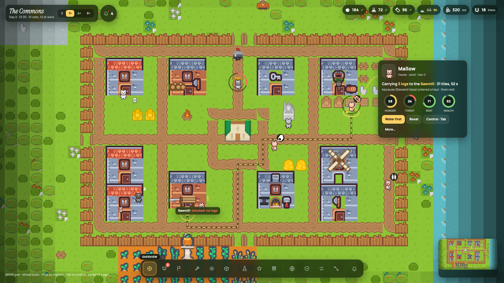
12345678910Z-order, back to front: world tiles → roads, structures, props → cats and cargo badges → map annotations (route, rings, ghost tiles, tags) → screen chrome (chip, pills, dock, minimap, hint) → drawer → card and leader line → popover → mode chip.
3Tokens
Colour
| Token | Value | Use |
|---|---|---|
| --glass | rgba(12,22,16,.70) + blur 14 px, saturate 1.2 | Every pill, chip, card, popover, dock, minimap frame |
| --glass2 | rgba(10,19,14,.90) + blur 18 px | Drawer, reins bar (large text areas need more opacity) |
| glass fallback | rgba(12,22,16,.86), no blur | Engines without backdrop blur (§10). Drawer fallback: rgba(10,19,14,.95) |
| --edge | rgba(255,255,255,.14) | 1 px border on all glass |
| --line | rgba(255,255,255,.09) | Row dividers, dock separators |
| --fill | rgba(255,255,255,.08) | Secondary buttons, key caps, state chips |
| --ink | #eef3ea | Primary text |
| --dim | #a9b8a8 | Secondary text, inactive icons, table headers |
| --sun | #ffd166 · text on it #1a1608 | The one accent: active dock icon, primary button, selection, route, warning severity, "estimate" freshness |
| --bad | #ff6b57 | Danger severity, need below 30 %, blocked state, illegal tile, "no bed" |
| --ok | #7ed37a | Counted reports, automated state, healthy need |
| --info | #7cc6e6 | Info severity, study in progress |
| ring hole | #15221a | Centre of the need rings in cards |
Rule: sun is the only colour that says "this is active or the thing to do". Never use it for decoration. Red, green and blue are status only and always appear with a word or a number beside them.
Type
Minimum size anywhere is 10 px uppercase or 11.5 px sentence case. Both faces are SIL Open Font Licence; ship the TTF/OTF files with the client, do not load from the web.
Shape, depth, spacing
| Radius | pills and chips 999 px · cards, popover, drawer, dock 16 px (dock 22 px) · buttons 10 px · dock icon cell 14 px · portrait 14 px · inline boxes 12 px |
| Shadow | glass: 0 10px 30px rgba(0,0,0,.35) · drawer: 0 14px 40px rgba(0,0,0,.45) |
| Screen margin | 20 px from every edge at 1920 × 1080 (12 px at 1280 × 720) |
| Gaps | between pills 8 px · dock icons 4 px · buttons 6 px · card sections 10–12 px |
| Padding | pill 8 / 12 · chip 10 / 16 · card 14 · popover 14 · drawer 16 / 18 · button 7 / 11 (popover 6 / 10) |
| Icons | 24 px viewBox line glyphs, stroke 1.8, round caps and joins, currentColor · dock 22 px · seal 20 px · inline 14–16 px · set in mockups/icons.js |
:root{
--glass:rgba(12,22,16,.70); --glass2:rgba(10,19,14,.90); --edge:rgba(255,255,255,.14);
--line:rgba(255,255,255,.09); --fill:rgba(255,255,255,.08);
--ink:#eef3ea; --dim:#a9b8a8; --sun:#ffd166; --bad:#ff6b57; --ok:#7ed37a; --info:#7cc6e6;
}
.g { background:var(--glass); backdrop-filter:blur(14px) saturate(1.2); border:1px solid var(--edge);
border-radius:16px; box-shadow:0 10px 30px rgba(0,0,0,.35); }
4Layout and responsive rules
| Object | 1920 × 1080 (reference) | 1280 × 720 | below 1100 wide |
|---|---|---|---|
| Village chip + seal | left 20, top 18; chip name 26 px; seal after an 8 px gap | left 12, top 12; name 20 px; speed 11 px | census line hidden; speed collapses to pause + current speed |
| Resource pills | right 20, top 18; six pills, 8 px gap | right 12; padding 5 / 9; count 13 px | icon + number only; research and blessings move into the Overview drawer |
| Dock | centred, bottom 20; 52 px cells, 22 px icons, 5 groups | bottom 12; 42 px cells, 19 px icons | 36 px cells; groups keep dividers |
| Tethered card | 340 px wide; anchored to the subject (§5.5) | 300 px; rings 44 px | becomes a bottom sheet, full width, no leader line |
| Drawer | left 20, top 82, bottom 96, width 660 (Research 1220) | width 560 (Research: full width minus 24) | full width minus 24; card hidden while open |
| Popover | left 20, top 82, width 470, caret under the seal | top 64, width 480 | full width minus 24 |
| Minimap | right 20, bottom 20, 230 × 150 | hidden; M toggles | hidden |
| Hint line | left 20, bottom 24, 11.5 px | hidden except connection state | hidden except connection state |
| Mode chip (build, control) | top 18, centred | same | same, text shortened |
Never scale the whole UI. Reflow per the table so text stays at physical size. The dock never scrolls; below 1100 px it drops the dividers' margins first, then cell size, and only then labels on hover become tap-to-reveal.
5Components
Every example below is rendered live from mockups/glass.css, the same stylesheet the mockups use. Class names in the specs refer to that file; use them as the naming contract when porting to USS or Bevy styles.
5.1 Village chip and speed control
The Commons
Day 2 · 13:30 · 31 cats, 12 at work.chip — name in Instrument Serif italic; second line: day, clock, alive count, working count. .seg — segmented control on a darker well; the active segment is sun. Paused: the ‖ segment is sun and the second line ends with "· paused". Keys Space pause, 1 4 8 speed.
5.2 Attention seal and popover
The Commons
Day 2 · 13:30 · 31 cats, 12 at workSeal states, right to left in the example: open (sun tint + inset 1 px sun ring, same as an active dock icon) · empty (no dot, count in dim) · default (bell in dim, 9 px red dot with a 2 px dark border, count in ink).
| Seal | .seal pill: padding 8 / 13 / 8 / 11, gap 8, bell 20 px, count 15 px 800. The dot appears when any item has danger or warning severity. Hover shows the label "Attention" above it like a dock label. |
| Popover | .pop: 470 px wide, padding 14, top 82 (chip bottom + 8), caret 12 px rotated square centred under the seal. Header: "Needs attention" + count + "Esc". Rows: 10 px dot column · title 13 px 800 + cause 11.5 px dim · actions. |
| Severity | danger = .dot red · warning = .dot.w sun · info = .dot.i blue. Order rows danger → warning → info, then oldest first. Never more than one primary (sun) button: only the first row. |
| Actions | Exactly one action per row plus the pin. The action is the single most useful ClientAction for that item. The pin pans the camera to the item's anchor, closes the popover, and opens the subject's card. |
| Lifecycle | Items are computed server-side (§8). When a condition clears, the row fades out over 150 ms; the count updates immediately. A new danger item pulses the dot once (skipped under reduced motion). |
| Limits | Show at most 6 rows; a 7th row reads "N more · open Events". Empty state: "Nothing needs you. Last solved: Sawmill unblocked at 13:40." |
5.3 Resource pills
.pill — 18 px tracked resource icon (existing PNGs), count 15 px 800, then a freshness mark. Counted within the last hour: green ✓. Older: the age in sun ("6h") and the count in dim (.pill.stale). Exact scalars (research, blessings) carry a dim unit instead. Clicking a pill opens Stores (or Research / Shrine) in the drawer. Hover: a tooltip "counted 12:50 by Pip · Log pile, Storehouse".
5.4 Dock
.dock — 14 sections in 5 groups: Overview · Cats · Village | Build · Work · Stores | Research · Officers · Shrine | World · Defense · Trade · Routes | Events. Groups are separated by .sep, a 1 × 30 px line. Cells 52 px, icon 22 px in dim. Active: .dk.on, sun tint 18 % + inset 1 px sun ring, and its label above (::after, uppercase 10.5 px). Hover: .dk.hov shows the label after 150 ms. Badge em: 16 px red disc with the number of attention items in that section (Cats 3 here). Click toggles that section's drawer; clicking the active icon closes it.
5.5 Tethered card

queue wants 6 lumber · 2 logs → 1 lumber
Left: cat variant with the leader line to the subject's feet. Right: building variant with a key–value block instead of rings.
| Anatomy | .hd portrait 52 px (cat: sprite cell at 2×, pixelated; building/pile: 40 px sprite in a 52 px well) + name 19 px + one dim line of facts · .now the "now line" (§7) with clickable nouns in sun, then a dim cause line · body: .rings (cats), .kv (buildings, piles), floors/cargo/route bar (expeditions) · .acts up to 3 buttons + "More…" |
| Rings | 50 px, 6 px track (conic gradient), hole #15221a, number inside 13 px 800, label 10 px uppercase. Colour by value: ≥ 60 ok, 35–59 sun, < 35 bad. Order: hunger, thirst, rest, health. |
| Placement | Width 340. Preferred position: 120 px right of and 180 px above the subject's anchor. If that would leave less than 20 px to the right edge, mirror to the left; if less than 20 px to the top, drop below. Clamp inside the 20 px screen margin and above the dock. Keep the card still while the subject moves; only the leader line updates. Re-place on pan or zoom. |
| Leader line | 2 px sun cubic Bézier from the card's near edge at y + 60 to the anchor, 4 px dot at the anchor. Anchor: cat feet centre, building entrance tile centre, pile centre, entrance tile for expeditions. Hidden when the anchor is off-screen; the card then shows a small "off-screen ↗" pin button. |
| Actions | One primary (sun) at most. Buttons act immediately; the label swaps to a confirmation for 2 s ("Sent for water") and then the card re-reads state. Destructive actions (Remove pile, Cancel route) ask once inline: the button becomes "Remove? Yes · No". |
| Variants | cat (rings, prefs, skills in More) · building / workplace (kv: on site, output, jobs, crew, queue) · stockpile (kv: counted, since, next) · plan (checklist, §5.7) · expedition (floors, cargo slots, route bar, readiness rings) · study (cost, requires, effect, leads to) · raider or animal (threat, distance, target, "Rally") |
5.6 Drawer
Work
10 workplaces · 12 at work · 1 blocked · 2 jobs waiting
ESC| Workplace | State | Who · recipe | Why · next |
|---|---|---|---|
| Sawmill 1 crew slot | Blocked | Bramble waiting | No logs at the station (0 of 4) |
Why the Sawmill is blocked
Let Thistle haulBoost hauling · 1 blessingPause queue | |||
| Hauling | Automated | Hazel + 5 haulers | Steward decides; you may boost. |
| Smithy | Waiting | Moss bringing ore | Needs 2 more ore; Moss arrives in 12 s. |
| Mill | Manual | no worker | Add a recipe to start. |
Stamps: counted est. · 6 h Sparks: Roles: StewardHauler
| Frame | .sheet.g2 left 20, top 82, bottom 96, width 660; .wide 1220 for Research (map dimmed 35 % behind it). One drawer at a time; opening another replaces it. Esc closes. The tethered card stays open beside it. |
| Header | Title 20 px 800 · summary line dim 12 px with counts · "ESC" at the right. Below it a row of filter .fchips: .on active (ink fill), .hot a sun-outlined filter that isolates problems, .search dashed input. |
| Tables | .tbl: headers 10 px uppercase dim; cells 8 px padding, 12.5 px; dividers --line; selected row tr.sel sun tint 8 % + 3 px sun bar on the left. Clicking a row selects its subject on the map (opens the card, pans if off-screen). Sort by attention first by default. |
| State chips | .state.auto green "Automated" · .manual dim "Manual" / "Vacant" · .blocked white on red · .waiting sun · "Counting" uses auto. Chips are text, never colour alone. |
| Why box | .whybox under a blocked or waiting row: title, numbered causes in the order the simulation evaluated them, then buttons (one primary). Only one why box open at a time. |
| Sparks | .spark four 22 × 5 bars for hunger, thirst, rest, health; the same thresholds as rings. |
| Section content | Overview: colony summary, officers, events feed · Cats: census (§9 g2) · Work (g3) · Stores (g5) · World (g6) · Research (g7) · Officers: seven offices with holder, building gate, "Appoint" · Shrine: offerings, tithe, rituals · Defense: warriors, walls, raid state · Trade: offers with escrow · Routes: transport routes and vehicles · Events: full log with filters · Village: found, join, elections, votes. |
5.7 Build mode
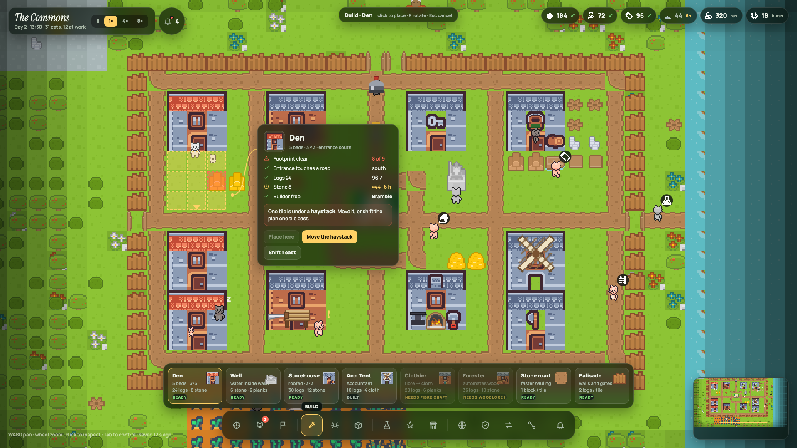
| Mode chip | .mode glass pill, top centre: "Build · Den" + dim "click to place · R rotate · Esc cancel". The dock's Build icon is active; the drawer is closed in this mode. |
| Catalog tray | Glass tray above the dock, cards 132 × 86: name 13 px 800, two dim facts, cost, and a 9 px uppercase gate line: "ready" green · "built" dim · "needs Fibre craft" sun on a 50 % faded card. The selected card has the sun tint and ring. Cards come from the building catalog, in research-tree order; locked ones stay visible with their gate. |
| Ghost footprint | Per tile: legal = sun 35 % fill + dashed sun outline; illegal = red 55 % fill + dashed red outline; 2 px inset. Entrance = a sun triangle on the road tile it must touch. The footprint follows the pointer snapped to tiles; R rotates the entrance. |
| Checklist card | Tethered to the ghost. Rows: footprint clear (n of 9), entrance touches a road, inside the interior, each material with the counted or estimated stock (estimate shows the clock glyph and sun value), research gate, a free builder. The "Place here" button is disabled while any row fails; the card's inline box names the failing tile and offers the two nearest fixes. |
5.8 Map annotation layer
These marks are drawn in world space by the world renderer, above cats and cargo, below screen chrome. Sizes are in tiles so they scale with zoom (at 3× a tile is 48 px).
| Mark | Spec | When |
|---|---|---|
| Selection | Ellipse 0.62 × 0.32 tiles under the feet, 3 px sun | Selected cat |
| Route | Authoritative path polyline through tile centres: 7 px rgba(0,0,0,.45) under-stroke, 3 px sun dash 10 / 9 on top, round joins | Selected cat with a target; explorer's surface route |
| Destination | Ring radius 0.55 tiles, 3 px sun, plus a 0.18 tile sun dot | End of the route |
| Need ring | Circle radius 0.7 tiles around the sprite, 4 px, dark under-stroke, red arc from 12 o'clock proportional to the lowest need | Any cat whose lowest need is below 30 %; never above |
| Cargo badge | Existing tracked cargo icon at 0.5 tiles on a dark disc, top-right of the sprite | Cat carrying anything (already shipped) |
| Waiting mark | Sun "!" 0.5 tiles, top-right | Cat idle at a station that cannot start |
| Map tag | .tag glass pill 12 px 800 above a building or cat; problem text in red | Blocked workplaces always; hover on any building or cat |
| Ghost tiles | See §5.7 | Build mode |
| Site marker | Dungeon entrance: dark ellipse + sun ring radius 0.85 × 0.55 tiles | World drawer open or a site selected |
5.9 Direct control (Tab)
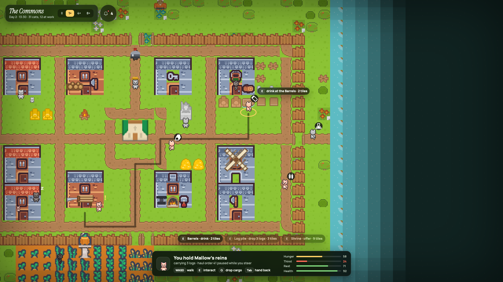
Reins bar (.g2, 760 px, bottom centre): portrait, "You hold Mallow's reins", the paused order in dim, key caps WASD walk · E interact · Q drop cargo · Tab hand back, and four thin need bars. Above it, one glass chip per nearby interactable ("E · Barrels · drink · 2 tiles"), nearest first, farther ones at 55 % opacity. The nearest also gets an "E" prompt pinned at its tile. A 220 px inset vignette signals the mode. The automation order resumes on Tab; the card reopens with what changed.
5.10 Minimap and hint line
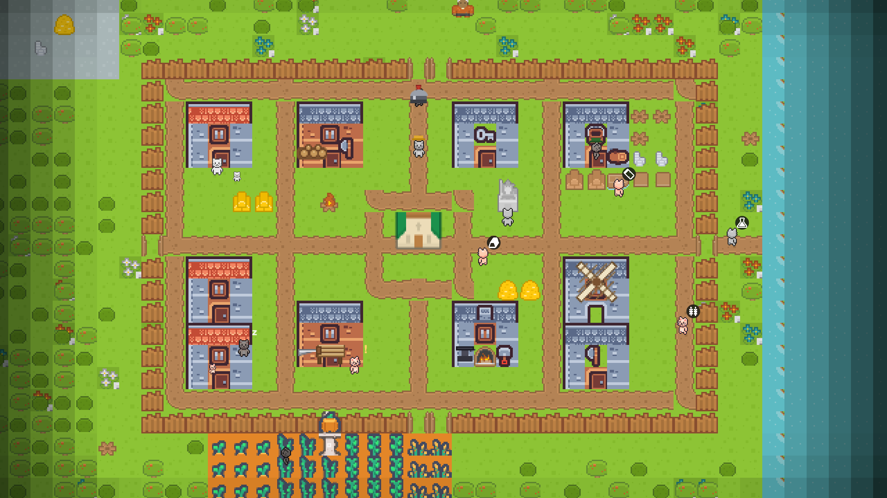
.mini 230 × 150 glass frame, world at 0.36×, sun viewport rectangle; click to pan, drag to scrub. Hidden below 1600 px (M toggles). .hint 11.5 px at 55 % white: controls, then save age and connection. When disconnected the whole line turns red and reads "reconnecting… last world 14 s ago"; the map keeps the last frame and the chip's second line says "stale".
6Behaviour
Selection and the card
- Click a cat, building, pile, plan, site entrance, or raider: select it, draw its marks, open its card. One subject at a time. Clicking empty ground or Esc (when no drawer or popover is open) deselects.
- The card never blocks the subject: placement rule in §5.5. Panning does not close it; it re-places. Zooming keeps it.
- "More…" grows the card in place (max height 70 % of the window, internal scroll) with full needs, skills, preferences, equipment, bed, and the cat's last six events.
- F follows the subject with the camera; the hint line shows "following Mallow · F to stop".
Attention
- The server computes attention items once per tick from the same rules the leader director uses for its safety floor plus: blocked or waiting workplaces, cats without a bed, needs below 30 % with no reachable fix, threats inside the halo, stale reports older than 4 h that a plan depends on, expeditions in danger.
- Seal click toggles the popover. Esc, a click outside, or any row action closes it. The pin pans and opens the card.
- Section badges on the dock show how many items belong to that section (Cats 3, Work 1).
- Optional hotkeys 1–6 trigger row actions while the popover is open.
Dock and drawer
- Click opens the section's drawer; click again or Esc closes it. Only one drawer. Research opens wide and dims the map 35 %.
- Rows in a drawer select subjects; the drawer stays open so the list and the card are read together.
- Build and Control are modes, not drawers: they close the drawer, show the mode chip, and restore the previous drawer on exit.
- Esc order: popover → mode → drawer → deselect.
Feedback, time, camera
- Action results appear inside the component that triggered them (button label swap for 2 s). No global toasts. Rejections read the server's reason in the same place: "Not reachable: gate closed".
- Save and connection state live only in the hint line; disconnection also stales the chip and keeps the last frame visible.
- Speed and pause are the chip's segmented control; simulated time stops on pause, the UI stays live.
- Camera: WASD or right-drag pan, wheel zoom around the pointer, Home returns to the shrine, PgUp / PgDn change dungeon floor when the World drawer or an explorer is selected.
7Copy rules
Words are part of the design. Sentence case everywhere except the 10 px uppercase labels. Verbs first on buttons. Say what the cat does, not what the system does.
The "now line" grammar (card, census, popover)
| Task kind | Template | Example |
|---|---|---|
| haul | Carrying n kind to the Target · d tiles, t s | Carrying 3 logs to the Sawmill · 31 tiles, 52 s |
| fetch | Going to the Source for kind · d tiles | Going to the river for water · 9 tiles |
| work | Verb-ing recipe at the Station · k of n | Sawing lumber at the Sawmill · 2 of 6 |
| wait | Waiting at the Station — reason | Waiting at the Sawmill — no logs delivered |
| farm | Harvesting crop · Field · ready in t | Harvesting grain · South field · ready in 2 h |
| rest / eat / drink | Sleeping · Den · wakes at hh:mm · Eating at the Place | Sleeping · Den 3 · wakes at 15:00 |
| idle | Idle — why no job matched | Idle — no job matches preferences |
| guard / fight | Guarding the place · threat d tiles away | Guarding the north gate · fox 3 tiles away |
| expedition | Exploring Site · floor k of n · cargo c of m | Exploring Root Hollow · floor 2 of 3 · cargo 2 of 6 |
| cause line | because owner ordered what · then next intent | because Steward Hazel ordered a haul · then rest |
Owners
Automated work names its officer: "Steward Hazel", "Accountant Pip". Manual work says "you asked" or "no Forester's Lodge yet — you choose". The founding safety floor reads "the Leader's safety floor".
Numbers
Whole numbers, thin spaces before units ("31 tiles", "52 s", "6 h"). Estimates get ≈. Times of day as hh:mm on a 24-hour clock; relative ages under an hour as "¼ h", above as "6 h". Percentages only inside rings and sparks.
Buttons
Verb + object: "Send a water run", "Let Thistle haul", "Plan a Den", "Rally Wren", "Count it now", "Recall", "Study now · 60". Never "OK", "Submit", "Apply". A confirmation reuses the verb: "Sent".
8Data the client needs
Most of this exists in ColonySnapshot. Fields marked new must be added to the protocol (bump PROTOCOL_VERSION); everything is read-only and derived server-side so the client never guesses.
| Component | Fields |
|---|---|
| Attention items new | attention: [{ id, severity: danger|warning|info, title, cause, section, anchor: { tile | entityId }, action: { label, clientAction }, since }] ordered by the server |
| Cat card / census | name, office, lifeStage, bed { den, index } or none, needs { hunger, thirst, rest, health }, task new-ish { kind, verb, object, targetEntity, tilesRemaining, etaSeconds }, cargo, new reason { ownerKind: leader|officer|player|manual, ownerName, orderId }, new nextIntent, prefs, skills, equipment, recentEvents |
| Route marks | authoritative path as tile list for the selected cat (already known to the server; stream it only for the selected subject to keep snapshots small) |
| Workplace rows | id, name, kind, state new enum { automated, manual, blocked, waiting, vacant, counting }, ownerOffice, workers, recipe, queue { done, total, repeat }, new blockReason { missingKind, have, need, waitingJobs: [{ id, claimant? }], causes: [text] }, outputTarget, lastOutput |
| Stockpile rows | id, name, tiles, capacity, accepts, holdings, report { countedAt, countedBy, isEstimate }, new flow { deltasSinceCount: [{ who, kind, qty, at }] }, accountant round { index, pileIndex, total, next, eta } |
| Build plan | catalog entries with cost, size, gate study, built count; for a hovered footprint new placement { tiles: [{ x, y, legal, reason }], entranceTile, entranceOnRoad, insideInterior, materials: [{ kind, need, have, isEstimate }], gateOk, builder } |
| Expedition card | explorer, site, floorIndex, floorCount, floorStates, guardianState, cargo { used, slots, items }, routeHomeTiles, readiness needs, safeReturn { stairsOpen, gateOpen, unloadTarget } |
| World drawer | known sites { name, entranceTile, distance, threat, floorsExplored, floorCount, lootLeft, state }, candidate cats with readiness reasons, other villages with trade state |
| Research drawer | families × stages with { id, name, cost, state: studied|affordable|locked|inProgress, requires, effect, leadsTo, progress, scholars, eta, new resolvesAttentionId? } |
| Chip, pills, hint | village name, day, clock, alive, working, speed, paused; resources with { value, countedAt?, isEstimate }; save age; connection state |
9Screens
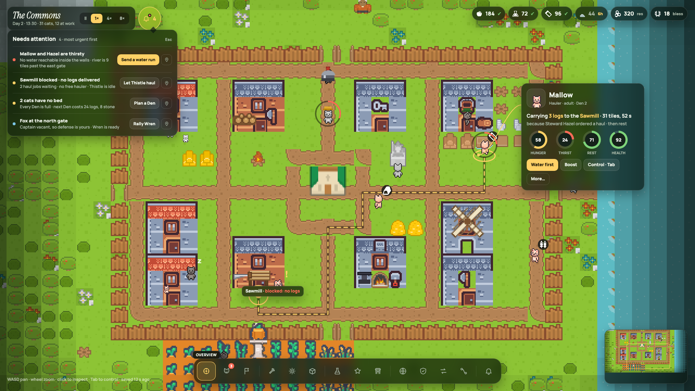
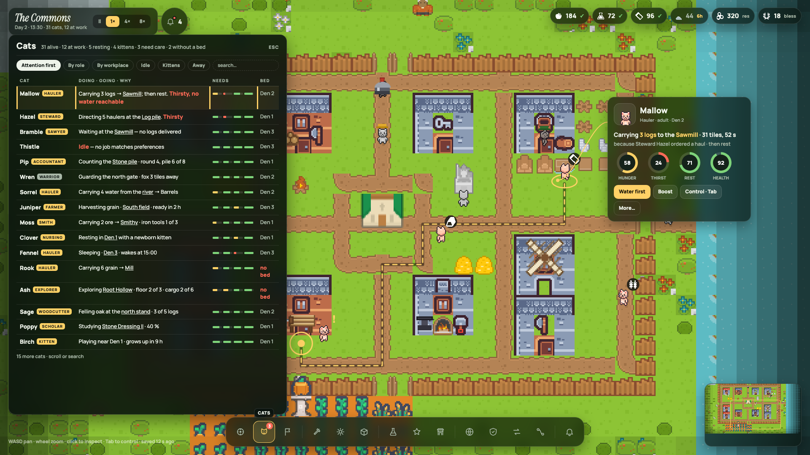
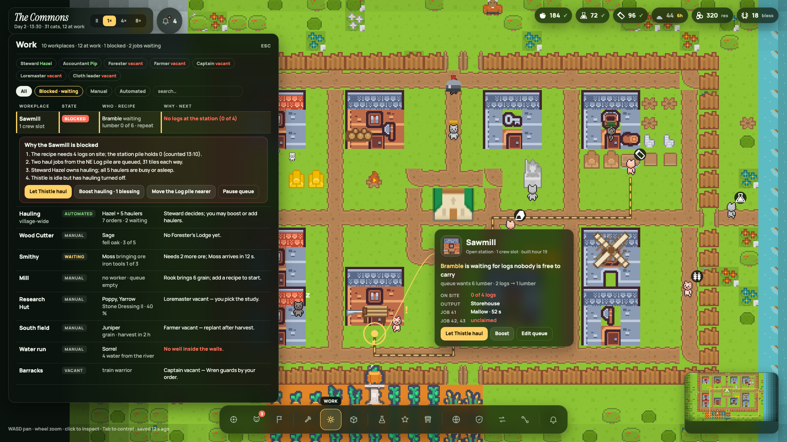
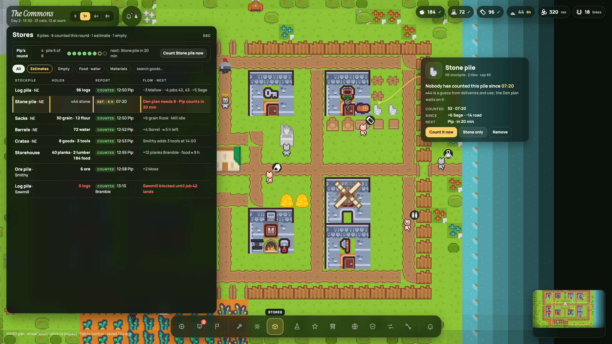
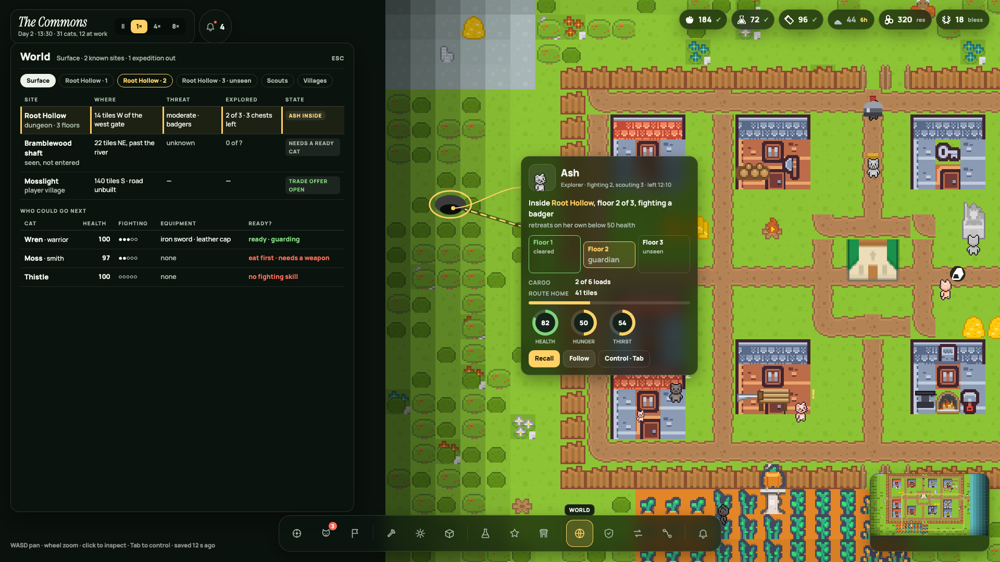
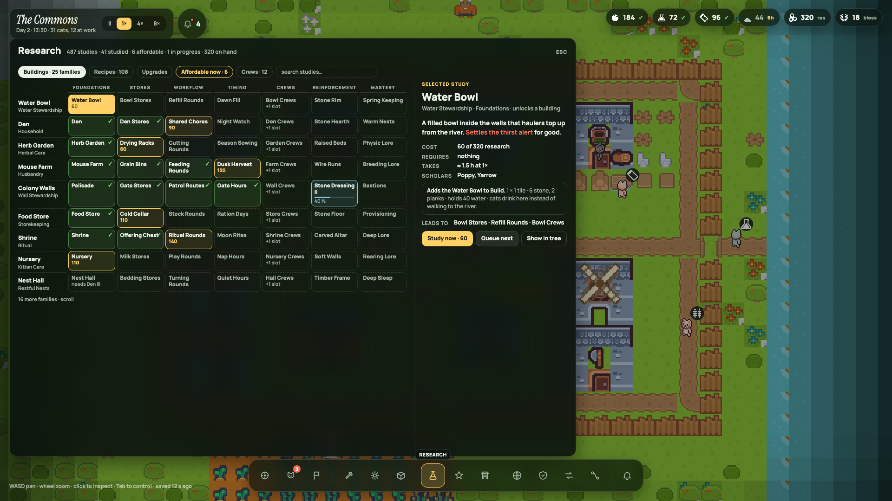
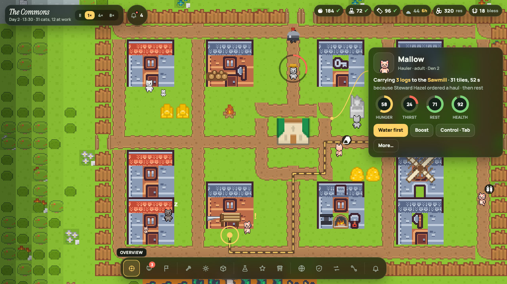
10Engine notes
Unity UI Toolkit (current client)
- Tokens as USS variables in
ForestUI.uss; replace the existing.top,.drawer,.navigation,.colony-alerts,.feedback,.statusblocks with.chip,.seal,.pop,.pill,.dock,.card,.sheet,.mini,.hint,.mode. - No backdrop blur in UI Toolkit: use the fallback colours from §3. Radius, borders, and shadows:
border-radiusis supported; emulate the shadow with a 9-sliced soft PNG behind each panel or skip it. - Leader line and rings: a
VisualElementwithgenerateVisualContentandPainter2D(BezierCurveTo, Arc). Card placement in aGeometryChangedEventhandler using the subject's world-to-panel position each frame. - Map annotation layer: world-space sprites and a
LineRendererfor the route, sorted above cats. Do not draw route or rings in the UI layer. - Fonts: add Manrope and Instrument Serif as Font Assets; set
-unity-font-definition. Icons: import the SVGs fromicons.jsvia the Vector Graphics package, or export 24 px PNGs at 2× and 3×. - Input: one router that handles Esc order, Tab, F, M, hotkeys; the dock and drawer only raise events.
- Keep pixel-art sprites at point filtering; the portrait in the card is the cat's sheet cell drawn at an integer scale.
Bevy (Rust client)
bevy_uinodes withBackgroundColor(fallback glass),BorderColor,BorderRadius;Textwith the twoTextFontassets; icons asImageNodefrom the exported PNGs.- Route, rings, ghost tiles:
Gizmosin world space or a small mesh per mark; sorted with the existing Z layering (camera at Z≈1000, marks between cats and the UI camera). - Leader line: a screen-space gizmo from the card node's rect (via
ComputedNode) to the projected anchor. - Card placement runs after layout each frame using the projected anchor; clamp inside the window minus margins.
- The drawer and popover are plain node trees toggled by a single
UiStateresource that encodes the Esc order.
11Accessibility and quality floor
- Text always sits on glass, so contrast is stable: ink on glass ≥ 9:1, dim on glass ≈ 5:1. Never place dim text directly on the map.
- Every status colour is paired with a word or number (state chips, freshness marks, severity rows). Rings carry the number inside.
- Focus ring: 2 px sun outline with 2 px offset on every focusable element; the dock is keyboard-navigable with arrows.
- Minimum hit target 32 px (dock cells 52, pin buttons 30 with 6 px margin).
- Reduced motion: no seal pulse, no label fade, drawer appears without slide.
- Text never scales with window size; layouts reflow (§4).
- Verify with a framebuffer capture at 1920 × 1080 and 1280 × 720 for each screen in §9, per the existing HANDOFF discipline; "it compiles" has hidden black screens before.
12Migration from the current interface
| Today | Becomes |
|---|---|
| Top bar: village name, alive/working/studies, resource chips, hour, speed buttons | Village chip (name, day, clock, alive, working, speed) + resource pills with freshness. Studies count moves to the Research drawer summary. |
| Alert buttons under the top bar; feedback and status boxes bottom right | Attention seal + popover; feedback inline in the originating component; status only in the hint line. |
| Left drawer holding both section cards and the inspector | Split: sections → left glass drawer; inspector → card tethered to the subject. |
| Horizontally scrolling 14-item navigation above the bottom bar | Grouped dock, no scrolling at any width. |
| Bottom bar: input hint, zoom buttons, "Return to village" | Hint line; zoom on wheel only; Home key and a minimap click return to the village. |
| World label ("Root Hollow approach · Surface") | Chip second line while a floor other than the surface is shown; World drawer chips select floors. |
| Resource chips open Stores / Research / Shrine | Unchanged: pills open the matching drawer. |
| Narrow-window reflow of the top bar and drawer | §4 table; no component ever scrolls horizontally. |
Suggested order of work
- Tokens, fonts, icons; glass fallback panel style.
- Chip, pills, dock, hint, minimap on the existing map (no behaviour change yet).
- Tethered card for cats with the now line and rings; selection ellipse, route, destination marks.
- Attention items in the snapshot; seal + popover; dock badges.
- Drawer frame + Cats, Work (with block reasons), Stores (with freshness).
- Build mode: tray, ghost, checklist; placement data in the snapshot.
- World + expedition card; Research wide drawer; remaining sections.
- Direct control reins bar; narrow-window reflow; accessibility pass; framebuffer captures.
13Open choices and their defaults
Three details were left open with five options each (renders/p1–p3). Implement the defaults unless told otherwise.
| Choice | Default (implemented in the mockups) | Alternatives |
|---|---|---|
| What the seal opens | Anchored popover under the seal | centred modal · right drawer · bottom sheet · spotlight that pans to each item |
| How sections open | Left glass drawer; wide for Research | centred modal sheet · full-screen page · tray from the dock · split view |
| Dock labels | Icons only, grouped, label on the active or hovered icon | tiny labels always · four named clusters · two rows · vertical dock |
14Files
| This guide | docs/ui-redesign/GUIDE.html (open locally; fonts load from Google Fonts, everything else is relative) |
| Stylesheet contract | mockups/glass.css — class names and values referenced above |
| Chrome helper | mockups/glass.js — builds chip, seal, popover, pills, dock, card, drawer, minimap, hint from data; the popover and now-line markup to copy |
| Icons | mockups/icons.js — 24 px SVG paths for the 14 sections and the status glyphs |
| World scene | mockups/world.js — the shared canvas scene and the map-mark drawing code (route, rings, ghost tiles) to port |
| Screens | mockups/g0–g9*.html → renders/g*.png |
| Option strips | mockups/p1–p3*.html → renders/p*.png |
| Earlier exploration | d1–d5 (five directions), a1–a8 (Field Atlas, superseded), o1–o5 (first option strips) |
| Regenerate | docs/ui-redesign/render.sh mockups/g0-overview.html renders/g0-overview.png (headless Google Chrome; append 1280,720 for the narrow screen) |